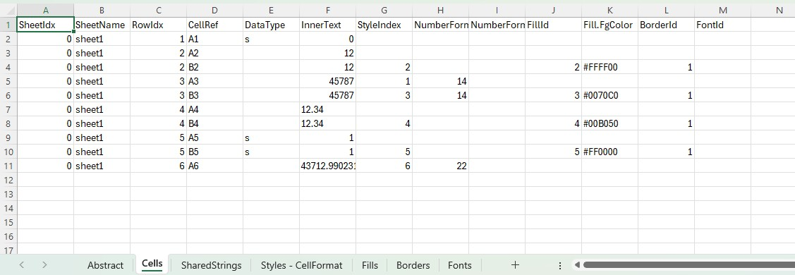
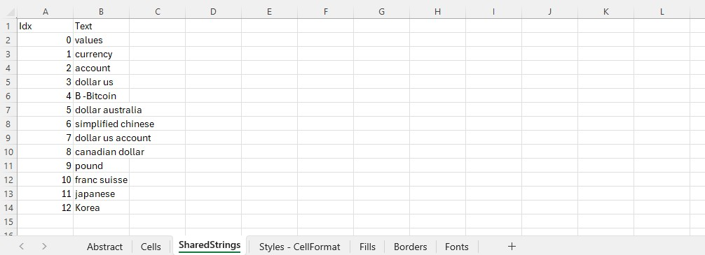
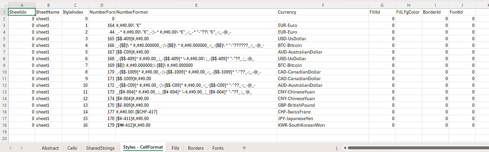
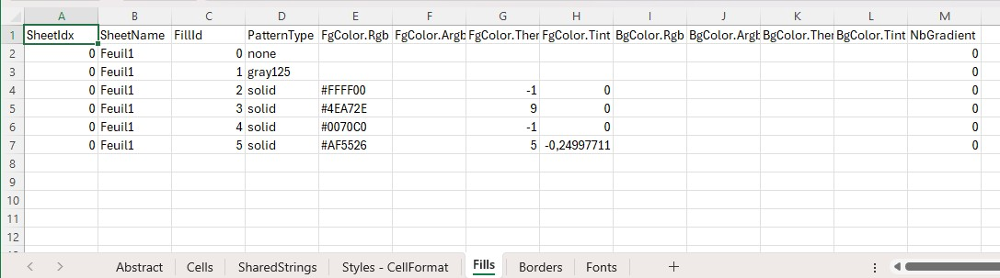
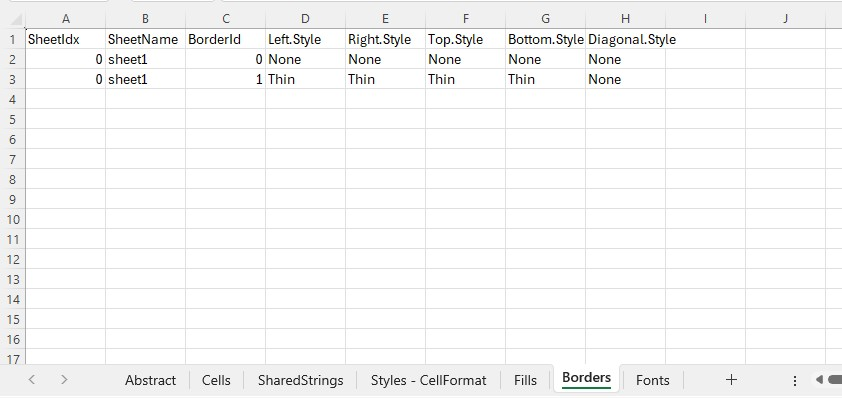

Analysis
The output Excel file contains the result of the analysis of the input excel file.There are 7 sheets.
Sheet #1 : Abstract. Contains general informations.

Sheet #2 : Cells. Contains first cells details.
Sheet #3 : SharedStrings. Contains first shared strings.
Sheet #4 : Styles-CellFormats. Contains styles definition, which are cellformats.
Sheet #5 : Fills. Contains fills definition by sheet (cell background color)
Sheet #6 : Borders. Contains borders definition by sheet (cell border color)
Sheet #7 : Fonts. Contains fonts definition by sheet